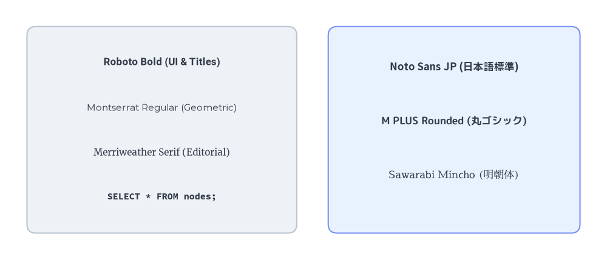
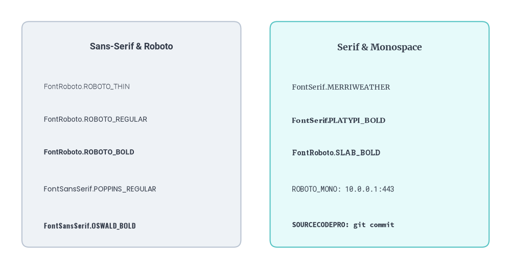
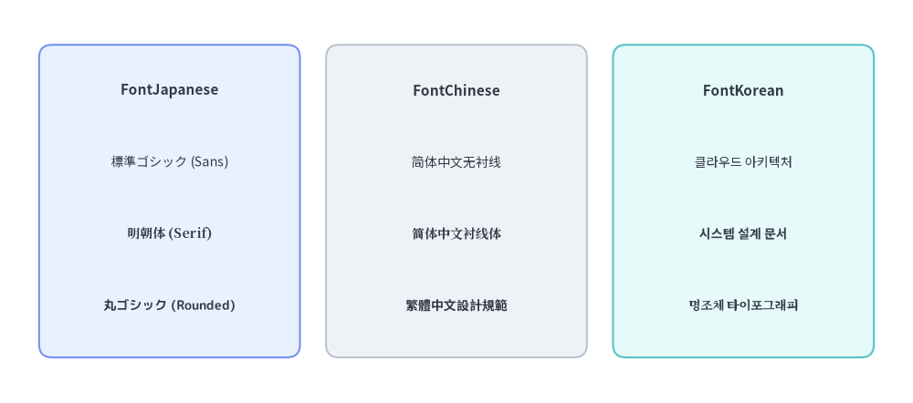

Fonts & Multilingual Catalog
Drawlib does not rely on host operating system fonts, which often differ across Linux, macOS, and Windows and cause text clipping or layout drift in CI.
Instead, drawlib.fonts provides 14 curated font classes backed by open-source Google Noto, Roboto, M PLUS, and Adobe Source families—downloaded on demand and cached locally for deterministic, cross-platform rendering.
1. Overview of Built-in Typography

Source Code
from drawlib.canvas import save, setup
from drawlib.fonts import (
FontJapanese,
FontMonoSpace,
FontRoboto,
FontSansSerif,
FontSerif,
)
from drawlib.shapes import rectangle
from drawlib.styles import Styles
from drawlib.text import text
setup(width=135, height=58)
# Left card: Western & Monospace specimen
rectangle((36, 29), width=60, height=46, style=Styles.Neutral.patch(shape_r=2))
text((36, 44), "Roboto Bold (UI & Titles)", style=Styles.DarkBold.patch(text_font=FontRoboto.ROBOTO_BOLD, text_size=12))
text((36, 34), "Montserrat Regular (Geometric)", style=Styles.Dark.patch(text_font=FontSansSerif.MONTSERRAT_REGULAR, text_size=11))
text((36, 24), "Merriweather Serif (Editorial)", style=Styles.Dark.patch(text_font=FontSerif.MERRIWEATHER_REGULAR, text_size=11))
text((36, 14), "SELECT * FROM nodes;", style=Styles.Dark.patch(text_font=FontMonoSpace.SOURCECODEPRO_BOLD, text_size=11))
# Right card: Multilingual CJK specimen
rectangle((101, 29), width=56, height=46, style=Styles.PrimaryNeutral.patch(shape_r=2))
text((101, 43), "Noto Sans JP (日本語標準)", style=Styles.DarkBold.patch(text_font=FontJapanese.SANSSERIF_BOLD, text_size=12))
text((101, 31), "M PLUS Rounded (丸ゴシック)", style=Styles.Dark.patch(text_font=FontJapanese.MPLUSROUNDED1C_BOLD, text_size=12))
text((101, 19), "Sawarabi Mincho (明朝体)", style=Styles.Dark.patch(text_font=FontJapanese.SAWARABI_MINCHO, text_size=12))
save()
2. Complete Catalog of All 14 Classes in drawlib.fonts
All font classes are imported directly from drawlib.fonts:
from drawlib.fonts import (
# 1. Universal Default, Custom File Loader & Base Class
Font,
FontFile,
FontBase,
# 2. Western & Code Typography
FontRoboto,
FontSansSerif,
FontSerif,
FontMonoSpace,
FontSourceCode,
# 3. CJK & International Scripts
FontJapanese,
FontChinese,
FontKorean,
FontArabic,
FontThai,
FontBrahmic,
)
2.1. System, Universal & Custom Font Classes (3 Classes)
| Class | Category | Members / Signature | Description |
|---|---|---|---|
Font |
Universal Default | SANSSERIF_THIN, SANSSERIF_REGULAR, SANSSERIF_BOLD, SERIF_THIN, SERIF_REGULAR, SERIF_BOLD |
Default cross-platform font family (Noto Sans / Noto Serif CJK) supporting Latin and East Asian scripts out of the box. |
FontFile |
Custom Font Loader | FontFile(file="path/to/font.ttf") |
Loads any external .ttf, .otf, .woff, or .woff2 corporate font file (resolved relative to the calling script). |
FontBase |
Abstract Base Enum | class FontBase(str, Enum) |
Base class inherited by all built-in font enumerations for type checking and style validation. |
2.2. Western & Code Typography Classes (5 Classes)
| Class | Typeface Families | Available Weight / Style Variants |
|---|---|---|
FontRoboto |
Roboto, Roboto Serif, Roboto Mono, Roboto Condensed, Roboto Slab | ROBOTO_THIN, ROBOTO_REGULAR, ROBOTO_BOLD (aliases: THIN, REGULAR, BOLD), SERIF_THIN, SERIF_REGULAR, SERIF_BOLD, MONO_THIN, MONO_REGULAR, MONO_BOLD, CONDENSED_THIN, CONDENSED_REGULAR, CONDENSED_BOLD, SLAB_THIN, SLAB_REGULAR, SLAB_BOLD |
FontSansSerif |
Lato, Montserrat, Oswald, Poppins, Raleway | LATO_THIN, LATO_REGULAR, LATO_BOLD, MONTSERRAT_THIN, MONTSERRAT_REGULAR, MONTSERRAT_BOLD, OSWALD_THIN, OSWALD_REGULAR, OSWALD_BOLD, POPPINS_THIN, POPPINS_REGULAR, POPPINS_BOLD, RALEWAYS_THIN, RALEWAYS_REGULAR, RALEWAYS_BOLD |
FontSerif |
Courier, Merriweather, Platypi, Playfair Display | COURIER_REGULAR, COURIER_BOLD, MERRIWEATHER_THIN, MERRIWEATHER_REGULAR, MERRIWEATHER_BOLD, PLATYPI_THIN, PLATYPI_REGULAR, PLATYPI_BOLD, PLAYFAIRDISPLAY_REGULAR, PLAYFAIRDISPLAY_BOLD |
FontMonoSpace |
Roboto Mono, Courier, Source Code Pro, Source Han Code JP | ROBOTO_MONO_THIN, ROBOTO_MONO_REGULAR, ROBOTO_MONO_BOLD, COURIER_REGULAR, COURIER_BOLD, SOURCECODEPRO_THIN, SOURCECODEPRO_REGULAR, SOURCECODEPRO_BOLD, SOURCEHANCODEJP_THIN, SOURCEHANCODEJP_REGULAR, SOURCEHANCODEJP_BOLD |
FontSourceCode |
Source Code Blocks | ROBOTO_MONO, COURIER, SOURCECODEPRO, SOURCEHANCODEJP (used for Styles.sourcecode_font and SourceCode smartarts) |
2.3. CJK & International Script Classes (6 Classes)
| Class | Script / Region | Available Weight / Style Variants |
|---|---|---|
FontJapanese |
Japanese (Kanji, Hiragana, Katakana) | SANSSERIF_THIN, SANSSERIF_REGULAR, SANSSERIF_BOLD, SERIF_THIN, SERIF_REGULAR, SERIF_BOLD, MPLUS1P_THIN, MPLUS1P_REGULAR, MPLUS1P_BOLD, MPLUSROUNDED1C_THIN, MPLUSROUNDED1C_REGULAR, MPLUSROUNDED1C_BOLD, SAWARABI_GOTHIC, SAWARABI_MINCHO |
FontChinese |
Simplified (SC), Traditional (TC), Hong Kong (HK) | SIMPLIFIED_SANSSERIF_THIN, SIMPLIFIED_SANSSERIF_REGULAR, SIMPLIFIED_SANSSERIF_BOLD, SIMPLIFIED_SERIF_THIN, SIMPLIFIED_SERIF_REGULAR, SIMPLIFIED_SERIF_BOLD, TRADITIONAL_SANSSERIF_THIN, TRADITIONAL_SANSSERIF_REGULAR, TRADITIONAL_SANSSERIF_BOLD, TRADITIONAL_SERIF_THIN, TRADITIONAL_SERIF_REGULAR, TRADITIONAL_SERIF_BOLD, HONGKONG_SANSSERIF_THIN, HONGKONG_SANSSERIF_REGULAR, HONGKONG_SANSSERIF_BOLD, HONGKONG_SERIF_THIN, HONGKONG_SERIF_REGULAR, HONGKONG_SERIF_BOLD |
FontKorean |
Korean (Hangul) | SANSSERIF_THIN, SANSSERIF_REGULAR, SANSSERIF_BOLD, SERIF_THIN, SERIF_REGULAR, SERIF_BOLD |
FontArabic |
Arabic (Sans, Kufi, Naskh) | SANSSERIF_THIN, SANSSERIF_REGULAR, SANSSERIF_BOLD, KUFI_THIN, KUFI_REGULAR, KUFI_BOLD, NASKH_REGULAR, NASKH_BOLD |
FontThai |
Thai | SANSSERIF_THIN, SANSSERIF_REGULAR, SANSSERIF_BOLD, SERIF_THIN, SERIF_REGULAR, SERIF_BOLD |
FontBrahmic |
Bengali, Devanagari, Tamil, Telugu | BENGALI_SANSSERIF_THIN/REGULAR/BOLD, BENGALI_SERIF_THIN/REGULAR/BOLD, DEVANAGARI_SANSSERIF_THIN/REGULAR/BOLD, DEVANAGARI_SERIF_THIN/REGULAR/BOLD, TAMIL_SANSSERIF_THIN/REGULAR/BOLD, TAMIL_SERIF_THIN/REGULAR/BOLD, TELUGU_SANSSERIF_THIN/REGULAR/BOLD, TELUGU_SERIF_THIN/REGULAR/BOLD |
3. Visual Specimen: Western & Monospace Typography
Use style.patch(text_font=...) to apply specific font families and weights (THIN, REGULAR, BOLD) to individual labels or cards:
from drawlib.canvas import save, setup
from drawlib.fonts import (
FontMonoSpace,
FontRoboto,
FontSansSerif,
FontSerif,
)
from drawlib.shapes import rectangle
from drawlib.styles import Styles
from drawlib.text import text
setup(width=140, height=74)
# Column 1: FontRoboto & FontSansSerif
rectangle((36, 37), width=60, height=62, style=Styles.Neutral.patch(shape_r=2))
text((36, 61), "Sans-Serif & Roboto", style=Styles.DarkBold.patch(text_font=FontRoboto.ROBOTO_BOLD, text_size=13))
specimens_left = [
(50, FontRoboto.ROBOTO_THIN, "FontRoboto.ROBOTO_THIN"),
(41, FontRoboto.ROBOTO_REGULAR, "FontRoboto.ROBOTO_REGULAR"),
(32, FontRoboto.ROBOTO_BOLD, "FontRoboto.ROBOTO_BOLD"),
(22, FontSansSerif.POPPINS_REGULAR, "FontSansSerif.POPPINS_REGULAR"),
(12, FontSansSerif.OSWALD_BOLD, "FontSansSerif.OSWALD_BOLD"),
]
for y, font_enum, label in specimens_left:
text((12, y), label, style=Styles.Dark.patch(text_font=font_enum, text_size=10, halign="left"))
# Column 2: FontSerif & FontMonoSpace
rectangle((104, 37), width=60, height=62, style=Styles.SecondaryNeutral.patch(shape_r=2))
text((104, 61), "Serif & Monospace", style=Styles.DarkBold.patch(text_font=FontSerif.MERRIWEATHER_BOLD, text_size=13))
specimens_right = [
(50, FontSerif.MERRIWEATHER_REGULAR, "FontSerif.MERRIWEATHER"),
(41, FontSerif.PLATYPI_BOLD, "FontSerif.PLATYPI_BOLD"),
(32, FontRoboto.SLAB_BOLD, "FontRoboto.SLAB_BOLD"),
(22, FontMonoSpace.ROBOTO_MONO_REGULAR, "ROBOTO_MONO: 10.0.0.1:443"),
(12, FontMonoSpace.SOURCECODEPRO_BOLD, "SOURCECODEPRO: git commit"),
]
for y, font_enum, label in specimens_right:
text((80, y), label, style=Styles.Dark.patch(text_font=font_enum, text_size=10, halign="left"))
save()

4. Visual Specimen: CJK & Multilingual Typography
Drawlib provides dedicated regional font classes for Japanese (FontJapanese), Chinese (FontChinese), and Korean (FontKorean), as well as FontArabic, FontThai, and FontBrahmic:
from drawlib.canvas import save, setup
from drawlib.fonts import FontChinese, FontJapanese, FontKorean
from drawlib.shapes import rectangle
from drawlib.styles import Styles
from drawlib.text import text
setup(width=140, height=62)
# 1. Japanese Fonts (FontJapanese)
rectangle((26, 31), width=40, height=48, style=Styles.PrimaryNeutral.patch(shape_r=2))
text((26, 48), "FontJapanese", style=Styles.DarkBold.patch(text_size=11))
text((26, 37), "標準ゴシック (Sans)", style=Styles.Dark.patch(text_font=FontJapanese.SANSSERIF_REGULAR, text_size=10))
text((26, 26), "明朝体 (Serif)", style=Styles.Dark.patch(text_font=FontJapanese.SERIF_BOLD, text_size=10))
text((26, 15), "丸ゴシック (Rounded)", style=Styles.Dark.patch(text_font=FontJapanese.MPLUSROUNDED1C_BOLD, text_size=10))
# 2. Chinese Fonts (FontChinese)
rectangle((70, 31), width=40, height=48, style=Styles.Neutral.patch(shape_r=2))
text((70, 48), "FontChinese", style=Styles.DarkBold.patch(text_size=11))
text((70, 37), "简体中文无衬线", style=Styles.Dark.patch(text_font=FontChinese.SIMPLIFIED_SANSSERIF_REGULAR, text_size=10))
text((70, 26), "简体中文衬线体", style=Styles.Dark.patch(text_font=FontChinese.SIMPLIFIED_SERIF_BOLD, text_size=10))
text((70, 15), "繁體中文設計規範", style=Styles.Dark.patch(text_font=FontChinese.TRADITIONAL_SANSSERIF_BOLD, text_size=10))
# 3. Korean Fonts (FontKorean)
rectangle((114, 31), width=40, height=48, style=Styles.SecondaryNeutral.patch(shape_r=2))
text((114, 48), "FontKorean", style=Styles.DarkBold.patch(text_size=11))
text((114, 37), "클라우드 아키텍처", style=Styles.Dark.patch(text_font=FontKorean.SANSSERIF_REGULAR, text_size=10))
text((114, 26), "시스템 설계 문서", style=Styles.Dark.patch(text_font=FontKorean.SANSSERIF_BOLD, text_size=10))
text((114, 15), "명조체 타이포그래피", style=Styles.Dark.patch(text_font=FontKorean.SERIF_BOLD, text_size=10))
save()

5. Project-Wide Font Patching & Asset Caching
5.1. Switching Project Fonts Globally (Styles.patch_font())
Instead of patching text_font or text_size on every individual call, configure your project's styles.py using Styles.patch_font() to update regular, bold, thin, source-code fonts, and baseline font size across all preset tokens at once:
Styles.patch_font(
regular: FontBase | FontFile | None = None,
*,
bold: FontBase | FontFile | None = None,
thin: FontBase | FontFile | None = None,
sourcecode: FontSourceCode | None = None,
size: float | None = None,
) -> Self
| Parameter | Type | Default | Description |
|---|---|---|---|
regular |
FontBase | FontFile | None |
None |
Baseline font applied to regular style variants. If bold or thin are omitted, regular is also used as their fallback. |
bold |
FontBase | FontFile | None |
None |
Keyword-only font override applied to Bold and *Bold style variants. |
thin |
FontBase | FontFile | None |
None |
Keyword-only font override applied to Thin and *Thin style variants. |
sourcecode |
FontSourceCode | None |
None |
Keyword-only monospace font override assigned to Styles.sourcecode_font. |
size |
float | None |
None |
Keyword-only global font size override in points (text_size) applied across all Style tokens in the catalog. |
# styles.py
from drawlib.fonts import FontJapanese, FontSourceCode
from drawlib.styles import Styles
Styles = Styles.patch_font(
regular=FontJapanese.SANSSERIF_REGULAR,
bold=FontJapanese.SANSSERIF_BOLD,
thin=FontJapanese.SANSSERIF_THIN,
sourcecode=FontSourceCode.SOURCEHANCODEJP,
size=14.0,
)
When scaffolding a new project with drawlib init, pass --lang ja (or zh, ko) to generate this styles.py configuration automatically.
5.2. Offline & CI Font Asset Caching (drawlib cache)
To keep the core drawlib wheel lightweight, font files are downloaded on first use and cached locally. For air-gapped environments, Docker builds, or CI pipelines, pre-download font packages using the CLI (see Caching Architecture & CI/CD):
# Inspect cached font and icon packages
uv run drawlib cache list
# Pre-download all font and icon packages for offline builds
uv run drawlib cache download --all
# Clear cached font/icon assets if needed
uv run drawlib cache clear --all